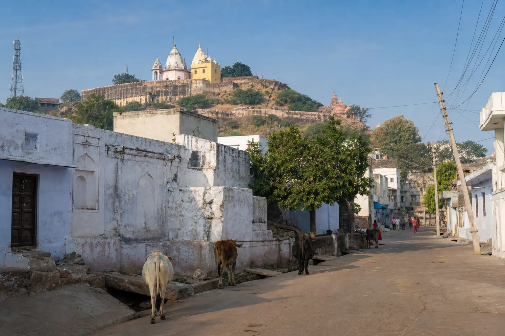
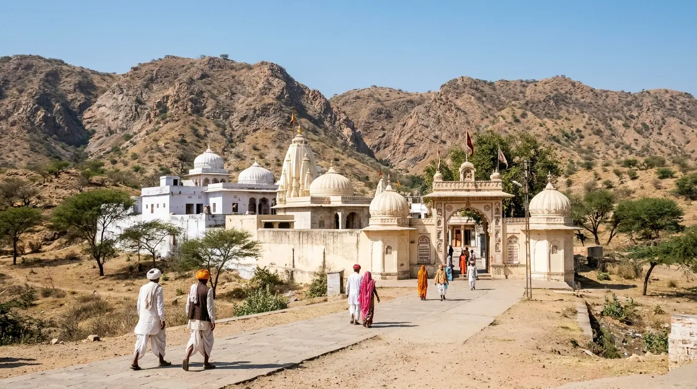

Agra To Karauli TaxiA Quiet Heritage Town, With Kaila Devi 23 KM On
Approx. 150 KM Via Hindaun
3–3.5 Hrs Each Way · Waiting Included

Town Or Temple — Which Are You Coming For?
Karauli works two ways. Some people come for the town itself: Madan Mohan Ji, the City Palace, and a couple of unhurried hours in a quiet corner of eastern Rajasthan. Others are really going to Kaila Devi, 23 km further on, and stop in Karauli along the way. The drive is the same; the shape of the day is not. Tell us which it is and the plan — and the fare — follows from that.
Agra To Karauli Taxi At A Glance
~150 KM
From Agra, Via Hindaun
3–3.5 HRS
Each Way By Cab
+23 KM
Kaila Devi, If You Add It
5:30 AM
Suggested Pickup
Taxi Fare From Agra To Karauli
We do not publish a starting price for this route. Whether you add Kaila Devi changes the day by about 46 km and a couple of hours, so the two are quoted separately rather than averaged into one number.
| Cab Type | Seats | Same-Day Round Trip | With Kaila Devi Add-On |
|---|---|---|---|
| AC Sedan (Dzire / Amaze) | 4 | Fare on WhatsApp | Fare on WhatsApp |
| AC SUV (Ertiga) | 6 | Fare on WhatsApp | Fare on WhatsApp |
| AC SUV (Innova Crysta) | 7 | Fare on WhatsApp | Fare on WhatsApp |
| Tempo Traveller | 12–15 | Fare on WhatsApp | Fare on WhatsApp |
Your fixed fare covers fuel and driver charges, including waiting at each stop. Tolls, Rajasthan state tax where applicable, and parking are paid by you at actuals, and every component is explained on WhatsApp before you confirm. See the full Agra taxi fare list for the routes we do publish prices for.
The Road To Karauli
- Karauli sits in eastern Rajasthan, on the banks of the Kalisil river, about 150 km from Agra.
- The cab runs towards Fatehpur Sikri and the Bharatpur bypass, on via Hindaun, then takes the Karauli road into town.
- Most of the route is decent highway. The last stretch into town is a smaller road, where a driver who knows it makes the difference.
- 3 to 3.5 hours each way, which is what puts the suggested pickup at half past five.
- Pickup from any Agra address — hotel, home, Agra Cantt, Agra Fort station or Kheria Airport — with a tea and washroom break planned on the way.
The Same-Day Plan
This is the shape of the day with the Kaila Devi add-on included. Drop it and you are back in Agra considerably earlier.
- 5:30 am — pickup from your Agra hotel or home.
- 9:00 am — arrive Karauli; Madan Mohan Ji Temple and the City Palace.
- 10:30 am — optional: on another 23 km to Kaila Devi for darshan.
- 1:00 pm — lunch in Karauli or on the highway.
- 7:00–8:00 pm — drop back at your Agra address.
- Prefer a slower pace, or an overnight stop? Ask us and we will plan the day around your family rather than the clock.
What There Is To See
Madan Mohan Ji Temple
Karauli’s Krishna temple, closely connected with the Braj tradition — which is why it feels familiar if you have already done the Mathura and Vrindavan circuit. An easy 30 to 45 minute stop.
Karauli City Palace
The town’s historic royal palace, with painted courtyards and carved facades. A short heritage detour if your schedule allows.
Karauli Town Itself
A quiet town on the banks of the Kalisil river, with pink sandstone buildings and an easy-going pace — pleasant in its own right, and a comfortable stop on the way to or from Kaila Devi.

Temple Country Beyond The TownKaila Devi Temple — the add-on
A major Shakti temple of eastern Rajasthan, about 23 km beyond Karauli town. Most visitors add it to the same day. If it is your main reason for travelling rather than an extra, our dedicated Kaila Devi page has the fuller plan, the Navratri warnings and the two-day option.
Clear Fare Breakdown
What Your Booking Includes
One cab and one driver for the day, at a price agreed before you leave Agra.
Included In The Fare
- Private AC Cab For The Full Day
- Fuel And Driver Charges
- Waiting At Every Stop, Within The Booked Day
- Belongings Locked In The Car
- Door-To-Door Agra Pickup And Drop
- Driver Name, Number And Car Number Before Pickup
Paid Separately By You
- Highway Tolls, At Actuals
- Rajasthan State Tax, Where Applicable
- Temple And Palace Parking
- Entry Tickets, Meals And Offerings
Why Book This Route With Us
Route Experience
Our drivers know the Hindaun–Karauli stretch and the parking at both the temple and the palace — the last few kilometres into town are not obvious.
Kaila Devi Add-On Ready
Tell us if you want to combine Karauli with Kaila Devi darshan and we plan the timing rather than improvising it on the day.
Waiting Is In The Fare
No waiting charge within the booked day, and your luggage stays locked in the car while you are inside.
Family And Elder-Friendly
The driver assists with boarding and luggage, and we plan breaks around your comfort. For the longer drive we suggest the Innova Crysta.
Extras Told Upfront
Tolls, Rajasthan state tax and parking are named and estimated on WhatsApp before you book, not added at the end.
Same-Day Or Overnight
Most people do this in a day. If you would rather not, ask and we will plan the overnight version instead.
How Booking Works
01 — Send Your Trip Details
Travel date, passengers, pickup point in Agra, and whether you want Kaila Devi added.
02 — Fixed Fare Confirmed
Confirmed in writing on WhatsApp, including expected tolls, state tax and parking, so you know the full cost before you say yes.
03 — Driver Details Shared
Name, mobile number and car registration number before pickup — match the plate before boarding. No advance for most bookings.
Karauli As Part Of A Bigger Trip
Karauli sits between the two Rajasthan temples we run most often. If you want both in one go, the tour page carries the planned itinerary for the roughly 350–380 km circuit.
Agra to Kaila Devi Temple
The Shakti temple 23 km beyond Karauli, as a trip in its own right — same day or two days.
Fare on WhatsAppKarauli + Kaila Devi + Balaji
Both Rajasthan temples in one planned day, or a relaxed two-day version with a night halt in Karauli.
Fare on WhatsAppAgra to Mehandipur Balaji
The Hanuman temple in Dausa district, approx. 110–120 km and 2.5–3 hrs each way.
Fare on WhatsAppLocal Agra Operator
Your Local Travel Partner In Agra
Padma Shree Travels operates from Shamsabad, Agra, running local sightseeing, station and airport transfers, pilgrimage trips and outstation routes. Every pilgrimage route we run is listed on the temple tours hub, Braj and Rajasthan together.
- Your fare Fares are confirmed on WhatsApp before you travel, with tolls, Rajasthan state tax and parking identified separately.
- Your driver Your driver’s name, mobile number and car registration number are shared before pickup.
- Pickup and drop Pickup from any Agra address — hotel, home, Agra Cantt, Agra Fort station or Kheria Airport — and drop back at the same place.
Direct WhatsApp and phone support before and during your trip.
.jpg)
Agra To Karauli — Questions & Answers
How far is Karauli from Agra?
Karauli is approximately 150 km from Agra, about 3 to 3.5 hours by private taxi via Fatehpur Sikri, the Bharatpur bypass and Hindaun.
What is the taxi fare from Agra to Karauli?
We do not publish a fixed starting price for this route. A same-day round trip is available in an AC sedan, with Ertiga, Innova Crysta and Tempo Traveller for families and groups, and a separate fare if you add Kaila Devi. Tolls, Rajasthan state tax where applicable, and parking are extra at actuals and told to you before booking. Message us on WhatsApp for today’s fixed fare.
Can we visit Kaila Devi Temple on the same trip?
Yes. Kaila Devi Temple is about 23 km beyond Karauli town, and most visitors add it to the same day. Tell us on WhatsApp if you want the Kaila Devi add-on and we will plan the timing accordingly. If Kaila Devi is your main reason for travelling rather than the town, our dedicated Kaila Devi page has the fuller plan.
What is there to see in Karauli town?
Karauli’s main sights are the Madan Mohan Ji Temple, a Krishna temple closely connected with the Braj tradition, and the old Karauli City Palace nearby, known for its painted courtyards and carved facades. Both make an easy 30 to 45 minute stop, and the town itself is a quiet one on the banks of the Kalisil river.
Can we do Agra to Karauli as a one-day trip?
Yes. With a 5:30 am pickup you can cover Karauli town and the Kaila Devi add-on and be back in Agra the same evening, usually between 7:00 and 8:00 pm. Families preferring a slower pace can ask us for an overnight option instead.
Is the cab suitable for families and senior citizens?
Yes. We suggest the Innova Crysta for the longer drive, plan tea and washroom breaks around your comfort rather than the clock, and the driver assists with boarding and luggage at every stop. Extra stops cost nothing.
Is it spelled Karauli or Karoli?
Both spellings refer to the same town in eastern Rajasthan. You will see it written as Karauli or Karoli, and we run cabs there from Agra throughout the year.
Other Temple Routes From Agra
Temple Tours From Agra
Every pilgrimage route we run, Braj and Rajasthan, in one place.
View pilgrimage routesRajasthan Temple Tour Planner
Compare every Rajasthan route, or plan a longer multi-day yatra.
One-day to multi-dayAgra to Mathura Taxi
Krishna Janmabhoomi, Dwarkadhish and the ghats.
From ₹1,500 one wayMathura, Vrindavan & Barsana
The three-town Braj day, 10–12 hours out of Agra.
₹3,500 full dayFatehpur Sikri Day Trip
Akbar’s abandoned capital — also on the road out to Karauli.
From ₹2,500Full Agra Taxi Fare List
Every route and package we run, with fares in one table.
All faresPlanning A Karauli Trip?
Fare in writing. Waiting included. Kaila Devi add-on ready.
Send your travel date, who is coming, and whether Kaila Devi is on the list — we confirm the fare, the expected extras, and a pickup time that fits the plan.